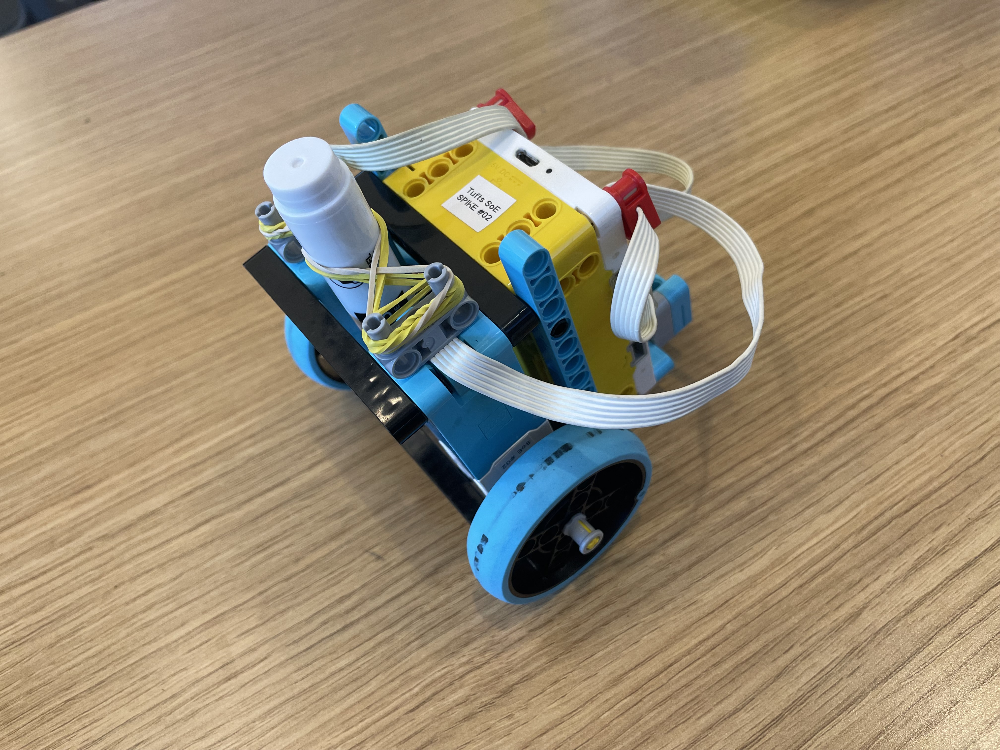
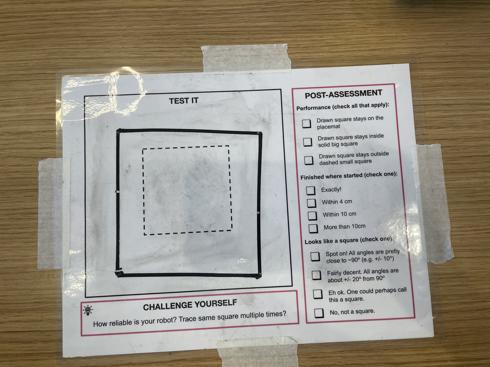

Project Portfolio

Project 7: Draw a Square
For this project, I had to draw a square outside the dotted borders while keeping it inside the solid border.


For this project, I had to draw a square outside the dotted borders while keeping it inside the solid border.
